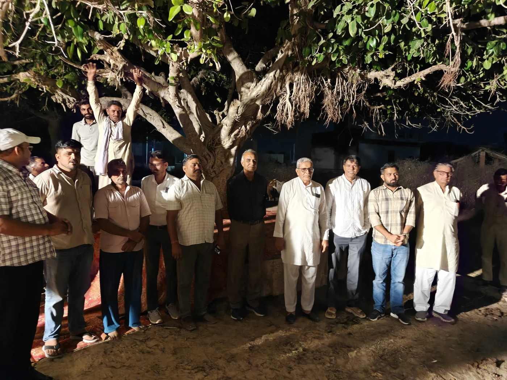
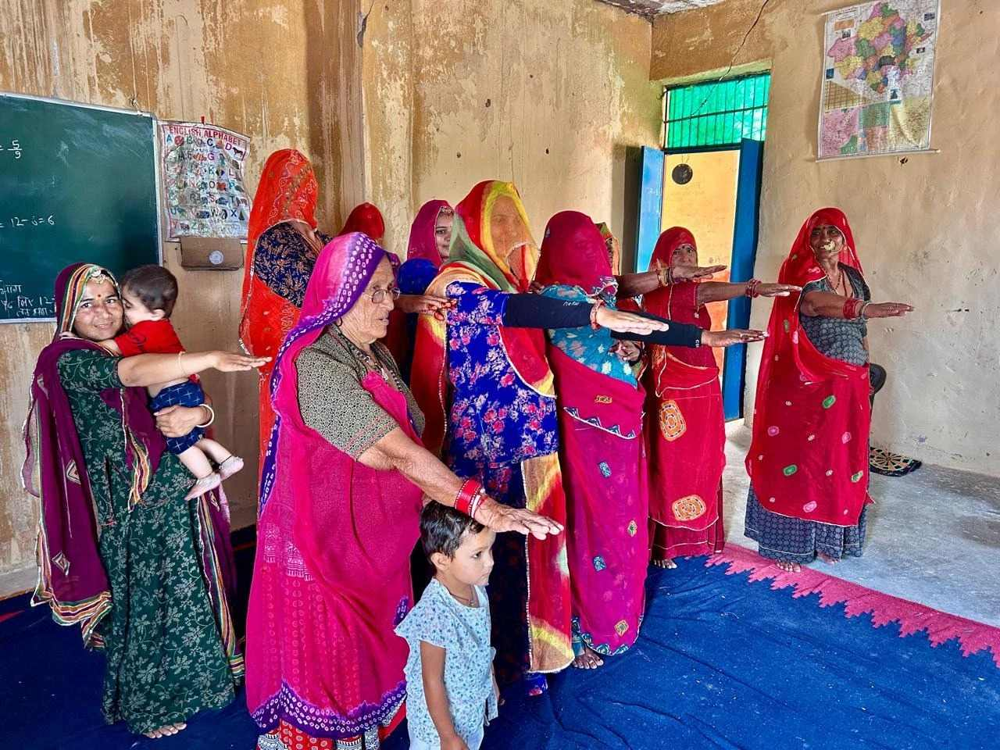
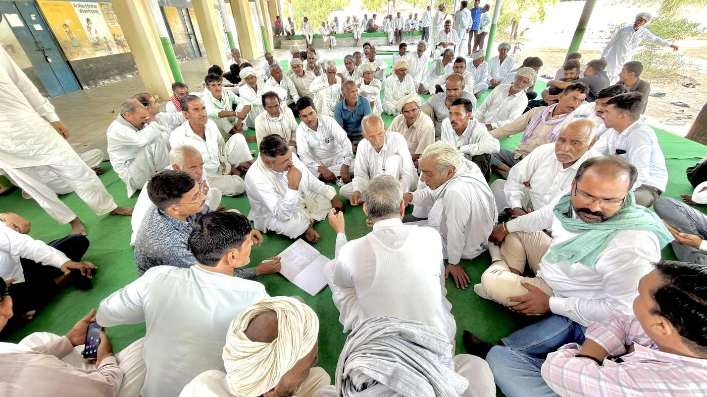

स्वागत में सम्मान परोसें, तंबाकू नहीं
न तंबाकू की मनुहार न युवाओं में इसकी स्वीकार्यता
लोकसंकल्प : तंबाकू मुक्त आतिथ्य
अतिथि का स्वागत स्नेह, सम्मान और अपनत्व से होता है। आइए, अपने घरों, बैठकों, विवाहों, उत्सवों और सार्वजनिक आयोजनों में तंबाकू परोसने, बाँटने और उसकी मनुहार करने की प्रथा छोड़ें।
बच्चों और युवाओं को ऐसा वातावरण दें, जिसमें तंबाकू को अपनापन या प्रतिष्ठा की पहचान न माना जाए।
व्यक्ति से परिवार, परिवार से गाँव। तंबाकू की सामाजिक स्वीकृति बदलने का संकल्प लें।

यह पहल क्यों
मनुहार से शुरू होती है स्वीकृति
कई परिवारों और समुदायों में तंबाकू को अतिथि सत्कार, बैठक, मनुहार और मेलजोल का हिस्सा मान लिया जाता है। इसी व्यवहार से अगली पीढ़ी तक यह संदेश पहुँचता है कि तंबाकू सामान्य और स्वीकार्य है।
लोकसंकल्प का आग्रह है कि हम आतिथ्य की आत्मीयता बनाए रखते हुए तंबाकू परोसने की प्रथा बदलें। मेहमानों का स्वागत पानी, स्थानीय स्वस्थ पेय, भोजन, संवाद और सम्मान से करें।
तंबाकू सेवन करने वाले व्यक्ति को छोड़ने के लिए प्रोत्साहित करें और सहायता सेवाओं से जोड़ें। यह अभियान किसी व्यक्ति के विरुद्ध नहीं, एक प्रथा के विरुद्ध है।
आतिथ्य में बदलाव आज से। तंबाकू मुक्त पीढ़ी के लिए साथ साथ।
हमारे पाँच साझा संकल्प
जो हम सब मिलकर तय करते हैं
- परोसेंगे नहीं। घर और सामाजिक आयोजनों में तंबाकू परोसेंगे या बाँटेंगे नहीं।
- मनुहार नहीं करेंगे। अतिथि या साथी पर तंबाकू लेने की मनुहार या दबाव नहीं डालेंगे।
- महिमामंडन नहीं करेंगे। बच्चों और युवाओं के सामने तंबाकू का महिमामंडन नहीं करेंगे।
- सहायता से जोड़ेंगे। तंबाकू छोड़ना चाहने वालों को सम्मानपूर्वक सहायता से जोड़ेंगे।
- संवाद करेंगे। अपने परिवार, संस्था और गाँव में संवाद करके इस बदलाव को टिकाऊ बनाएँगे।
जुड़ने के तीन तरीक़े
आप जहाँ से शुरू कर सकें
तीनों अलग अलग चीज़ें हैं और अलग अलग दर्ज होती हैं। एक परिवार का निर्णय उसके सब सदस्यों की शपथ नहीं है, और एक सभा में बैठे लोग उतने व्यक्तिगत संकल्प नहीं हैं।

अब तक
कहाँ तक पहुँचे
ये संख्याएँ इन्हीं फ़ॉर्मों से बनती हैं और नई प्रविष्टि आते ही अपने आप बदल जाती हैं।
ग्राम संकल्प में वही गाँव गिने जाते हैं जिन्होंने पूरे गाँव या वार्ड की सार्वजनिक सभा में निर्णय लिया। कुल व्यक्ति में व्यक्तिगत संकल्प, परिवारों के सहमत वयस्क और सभाओं की उपस्थिति तीनों जुड़ते हैं।
परिवार का संकल्प
हमारे घर में स्वागत होगा, तंबाकू की मनुहार नहीं
परिवार के वयस्क मुखिया की सहमति से घर और पारिवारिक आयोजनों में तंबाकू परोसना छोड़ने की प्रतिबद्धता दर्ज कीजिए।
परिवार की घोषणा
हमारा परिवार सहमत है कि इस तिथि से हम अपने घर और अपने द्वारा आयोजित पारिवारिक कार्यक्रमों में स्वागत या मनुहार के रूप में तंबाकू परोसेंगे या बाँटेंगे नहीं। हम अतिथियों का सम्मान स्वस्थ विकल्पों, आत्मीय संवाद और स्नेह से करेंगे। हम बच्चों और युवाओं के लिए सकारात्मक उदाहरण प्रस्तुत करेंगे तथा तंबाकू छोड़ना चाहने वाले सदस्यों का सहयोग करेंगे।
हमारे घर का आतिथ्य, स्नेह से भरपूर और तंबाकू से दूर।
परिवार के सभी सदस्यों के नाम या मोबाइल नहीं पूछे जाते। एक मुखिया की घोषणा को सभी सदस्यों की अलग अलग व्यक्तिगत शपथ भी नहीं माना जाता।
आपके परिवार का संकल्प दर्ज हो गया है
प्रमाणपत्र नीचे तैयार है।
प्रमाणपत्र क्रमांक :

डिजिटल प्रमाणपत्र
परिवार संकल्प प्रमाणपत्र
तंबाकू मुक्त आतिथ्य
यह प्रमाणित किया जाता है कि
आपका नामके परिवार ने अपने घर एवं स्वयं आयोजित पारिवारिक कार्यक्रमों में तंबाकू परोसने, बाँटने और उसकी मनुहार करने की प्रथा छोड़ने की स्वैच्छिक प्रतिबद्धता दर्ज की है, तथा बच्चों और युवाओं के लिए स्वस्थ वातावरण बनाने का संकल्प लिया है।
यह प्रमाणपत्र परिवार के वयस्क मुखिया द्वारा दर्ज सहमति आधारित घोषणा पर जारी है।
“हमारे घर का आतिथ्य, स्नेह से भरपूर और तंबाकू से दूर।”
प्रो. श्यामसुंदर ज्याणी
संयोजक, नई किरण नशा मुक्ति केंद्र
राजकीय डूंगर महाविद्यालय, बीकानेर
प्रवर्तक, लोकसंकल्प
दिनांक आज
प्रमाणपत्र क्रमांक :

तंबाकू मुक्त आतिथ्य लोकसंकल्प सभा
हमारे गाँव में आतिथ्य तंबाकू मुक्त हो
हमारे गाँव की नई पहचान, तंबाकू की मनुहार के बिना अतिथि सम्मान।
सभा में ग्रामीण, महिलाएँ, युवा, शिक्षक, स्वास्थ्यकर्मी, सामाजिक एवं पंचायत प्रतिनिधि मिलकर आतिथ्य में तंबाकू परोसने की प्रथा पर संवाद करें और इच्छुक समुदाय की सामूहिक प्रतिबद्धता दर्ज करें।
पैंतालीस मिनट की रूपरेखा
| अवधि | गतिविधि |
|---|---|
| 5 मिनट | स्वागत और उद्देश्य |
| 10 मिनट | स्थानीय आतिथ्य परंपरा और बदलाव पर खुला संवाद |
| 10 मिनट | महिलाओं, युवाओं, बुज़ुर्गों और स्वास्थ्यकर्मी के विचार |
| 10 मिनट | प्रस्ताव पर चर्चा, सहमति और सामूहिक शपथ |
| 5 मिनट | स्थानीय संपर्क दल और स्वस्थ आतिथ्य विकल्प तय करना |
| 5 मिनट | रिपोर्ट, अगले संपर्क और सहायता की जानकारी |
संयोजक का उद्घाटन वक्तव्य
हम अपने गाँव की आत्मीयता और अतिथि सम्मान की परंपरा को आगे बढ़ाना चाहते हैं। आज हम यह निर्णय लेने के लिए एकत्र हुए हैं कि स्वागत और मनुहार में तंबाकू परोसने की प्रथा छोड़ें। हम एक दूसरे का सहयोग करेंगे और अपनी अगली पीढ़ी को स्वस्थ उदाहरण देंगे।
सभा में पारित करने योग्य प्रस्ताव
सभा में उपस्थित नागरिक विचार विमर्श के बाद ये प्रतिबद्धताएँ स्वीकार करें।
- तय तिथि से हमारे द्वारा आयोजित स्वागत, बैठकों और सामाजिक कार्यक्रमों में तंबाकू परोसने, बाँटने और उसकी मनुहार करने की प्रथा छोड़ेंगे।
- घरों एवं निजी आयोजनों में इस बदलाव के लिए परिवारों से स्वैच्छिक सहमति प्राप्त करेंगे।
- विवाह, उत्सव और सामुदायिक समारोहों के आयोजकों को तंबाकू मुक्त आतिथ्य अपनाने के लिए प्रेरित करेंगे।
- बच्चों को तंबाकू ख़रीदने, लाने या परोसने के लिए नहीं भेजेंगे।
- तंबाकू छोड़ना चाहने वालों को स्वास्थ्य सेवाओं और परामर्श से जोड़ेंगे।
- स्थानीय संपर्क दल बनाकर 30 और 90 दिन बाद प्रगति की समीक्षा करेंगे।
- किसी व्यक्ति पर दबाव, अपमान या सामाजिक बहिष्कार का सहारा नहीं लेंगे।
निर्णय का दायरा सच सच लिखिए। यदि केवल कुछ परिवार सहमत हुए हों तो रिकॉर्ड में वही लिखा जाएगा, पूरे गाँव का निर्णय नहीं। किसी सामुदायिक बैठक को वैधानिक ग्राम सभा भी नहीं कहा जाएगा। पंचायत प्रतिनिधि के हस्ताक्षर तभी लिखिए जब वे सचमुच उपस्थित हों।
रिपोर्ट
सभा की रिपोर्ट भेजें
सभा हो जाने के बाद यह फ़ॉर्म भरें।
आपकी रिपोर्ट प्राप्त हुई
समीक्षा के बाद उसकी स्थिति दिखाई जाएगी।
रिपोर्ट क्रमांक :
ग्राम सम्मानपत्र तुरंत जारी नहीं होता। व्यक्ति और परिवार का प्रमाणपत्र दर्ज होते ही मिल जाता है, पर गाँव का सम्मानपत्र प्रस्ताव और सभा विवरण की समीक्षा के बाद ही दिया जाता है। यह जानबूझकर है : गाँव के नाम से जारी काग़ज़ पर वही लिखा जाना चाहिए जो सचमुच तय हुआ।
सहायता
तंबाकू छोड़ना चाहते हैं? पहला क़दम आज उठाइए
हेल्पलाइन
14446 राष्ट्रीय नशा मुक्ति हेल्पलाइन। चौबीसों घंटे, निःशुल्क।
14416 टेली मानस, मानसिक स्वास्थ्य सहायता।
पास का केंद्र
निकटतम सरकारी स्वास्थ्य केंद्र या जिला तंबाकू नियंत्रण प्रकोष्ठ से संपर्क कीजिए।
सहायता माँगना प्रमाणपत्र पाने की शर्त नहीं है, और सहायता माँगने वालों की संख्या को तंबाकू छोड़ चुके लोगों की संख्या नहीं दिखाया जाता।
अक्सर पूछे जाने वाले सवाल
जो बात पहले साफ़ होनी चाहिए
क्या तंबाकू सेवन करने वाला व्यक्ति जुड़ सकता है?
हाँ। आतिथ्य में तंबाकू परोसना छोड़ने और स्वयं तंबाकू छोड़ने की दिशा में क़दम उठाने का संकल्प लेकर जुड़ सकते हैं।
क्या केवल शपथ लेने से गाँव तंबाकू मुक्त घोषित हो जाएगा?
नहीं। यह पृष्ठ आतिथ्य में तंबाकू परोसने की प्रथा बदलने की पहल है। पूरे गाँव का सरकारी तंबाकू मुक्त प्रमाणन अलग मानकों और विभागीय मूल्यांकन से होता है।
क्या लोकसंकल्प प्रमाणपत्र सरकारी प्रमाणपत्र है?
नहीं। यह लोकसंकल्प का सहभागिता अथवा सामुदायिक संकल्प प्रमाणपत्र है। यह सरकारी प्रमाणपत्र नहीं है और सरकारी तंबाकू मुक्त ग्राम या संस्थान प्रमाणन का विकल्प नहीं है।
क्या किसी आयोजन या कुछ परिवारों का संकल्प दर्ज हो सकता है?
हाँ। उसका वास्तविक दायरा रिकॉर्ड में साफ़ लिखा जाएगा। उसे पूरे गाँव के निर्णय में नहीं गिना जाएगा।
18 वर्ष से कम आयु के बच्चे कैसे जुड़ें?
अपने अभिभावक या शिक्षक को बताकर। फ़ॉर्म में उनका नाम लिखना होता है। बच्चे का अपना मोबाइल, फोटो, पूरी जन्मतिथि या तंबाकू सेवन की जानकारी नहीं माँगी जाती, और सार्वजनिक सूची में बच्चे की पहचान नहीं दिखाई जाती। एक शिक्षक की सामूहिक प्रविष्टि को अलग अलग व्यक्तिगत शपथ भी नहीं माना जाता।
क्या भागीदारी के लिए कोई शुल्क है?
नहीं। पंजीकरण और डिजिटल प्रमाणपत्र निःशुल्क हैं।
मेरी जानकारी कहाँ जाती है?
वह अभियान के रिकॉर्ड में जाती है और पंजीकरण, प्रमाणपत्र तथा आपके अनुरोध पर सहायता के लिए काम आती है। मोबाइल, ईमेल, सहायता का अनुरोध और हस्ताक्षरयुक्त दस्तावेज़ सार्वजनिक नहीं किए जाते। सार्वजनिक आँकड़े समेकित रूप में दिखते हैं। नाम, कहानी या फोटो प्रकाशित करने के लिए अलग सहमति ली जाती है। जानकारी सुधारने या हटाने का अनुरोध info@loksankalp.org पर भेजा जा सकता है। पूरा विवरण निजता पृष्ठ पर है।
राष्ट्रीय अभियान की अवधि बीत जाने पर क्या होगा?
लोकसंकल्प इस व्यवहार परिवर्तन को आगे जारी रखेगा। राष्ट्रीय अभियान की अवधि और उसके बाद की स्थानीय गतिविधियाँ अलग अलग दिखाई जाएँगी।
आगे पहुँचाइए
यह संदेश तैयार है
स्वागत में सम्मान परोसें, तंबाकू नहीं। मैंने लोकसंकल्प के साथ आतिथ्य में तंबाकू परोसने और उसकी मनुहार करने की प्रथा छोड़ने का संकल्प लिया है। आप भी अपने परिवार और गाँव को जोड़िए। https://loksankalp.org/tambaku-mukt-atithya.html
अतिथि को अपनापन दें, युवाओं को स्वस्थ उदाहरण
लोकसंकल्प : तंबाकू मुक्त आतिथ्य से तंबाकू मुक्त पीढ़ी की ओर।
तंबाकू मुक्त युवा अभियान 4.0 के उद्देश्यों के समर्थन में यह लोकसंकल्प की जनभागीदारी पहल है। राष्ट्रीय अभियान की अवधि 28 अक्टूबर से 26 दिसंबर 2026 है। लोकसंकल्प की गतिविधियाँ उसके बाद भी जारी रहेंगी और अलग दिखाई जाएँगी।
इस पृष्ठ पर जारी लोकसंकल्प प्रमाणपत्र सरकारी तंबाकू मुक्त ग्राम अथवा संस्थान प्रमाणन का विकल्प नहीं हैं।